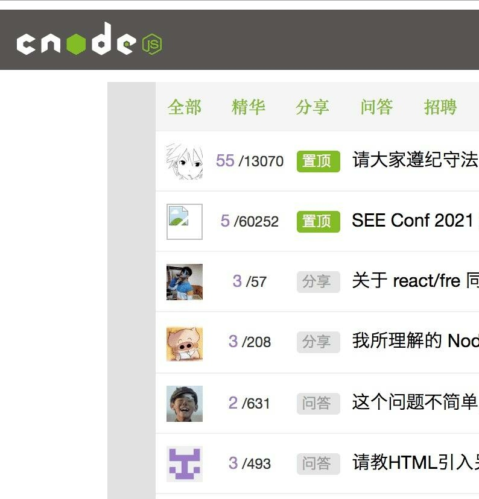
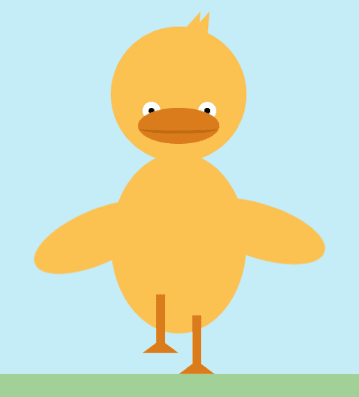
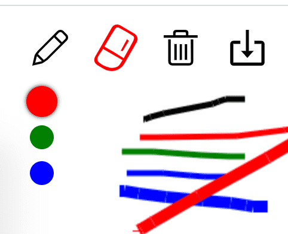
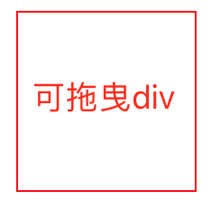

刘健

男 | 武汉 | 手机&微信：18871183644 | 邮箱：liujianlijin@gmail.com
湖北师范大学文理学院 · 计算机科学与技术 | 本科 | 2017年毕业
开源项目
- CNODE社区源码 预览
一个 Vue 项目。技术栈：Vue.js 计算属性、Vue.js 的内置指令和事件的绑定、Vue.js 的自定义事件和触发、Vue-router 路由的跳转和监听、父子组件之间的数据传递。做这个项目的同时一边查阅 Vue 官方文档，通过这个项目了解了 Vue 组件、Vue-router 路由 以及 Vuex 状态管理等重要概念。
 - 大梦翻译小程序源码
一个微信小程序应用。 支持 20 多种语言互译，包括中、英、日、德、法、俄、韩、西班牙语、 意大利语、荷兰语等语言。还支持包括文言文和粤语。这是我的第一个微信小程序项目。这个项目让我熟悉了微信小程序的开发流程。
- 会动的小黄鸭源码 预览
这是我在学习 CSS3 时做的一个可爱作品。用到了 JavaScript、JQuery、CSS3 动画。 预览时，注意页面右上角有三个按钮，点击可调整动画速度。默认速度是「中速」。
 - 在线画板源码 预览
这是我在学习 Canvas 时做的一个小作品。 主要使用 Canvas API，提供 PC 端及手机端在线画画、橡皮擦等功能，并支持画笔颜色与粗细调整、画作删除、画作下载。这个项目让我对 Canvas 有了更多的了解。
 - 可拖曳的div源码 预览
这是我在学习 TypeScript 时做的一个小 demo. 第一次使用 Parcel 自动刷新页面，不过也有一个 bug ，如果没有 JS 就不刷新。TS 比 JS 多了类型声明，VSCode 对 TS 的支持很好，智能提示。这个小项目让我对深入学习和使用 TypeScript 有了更多的信心。

技能
- 掌握 HTML5、CSS3、JavaScript 等 Web 基础
- 掌握媒体查询等移动端技术，熟悉 Flex、Grid
- 熟悉 ES6 常用新特性，如 const / Promise / await
- 掌握 Vue，包括 VueCli、VueRouter、Vuex等
- 掌握 JQuery、Bootstrap、ElementUI 等框架和 UI 库
- 掌握 Git、Webpack、Parcel、Npm、AJAX、Axios
- 对TypeScript、Python、Node.js 等有所涉猎
- 会科学上网，面向 Google、Stackoverflow 编程
- 此简历在线版本里的雷达图，用的 ECharts
其他链接
我的技术博客 目前 26 篇技术文章。
我的 GitHub 大概 200 多次提交。
工作经历
- 2017/8 ~ 2018/10 沈阳爱克威宠物医院 独立负责医院官网静态 Web 前端页面。
- 2019/1 ~ 2021/3 武汉金科教育 教初中生HTML、CSS 等前端基础知识。